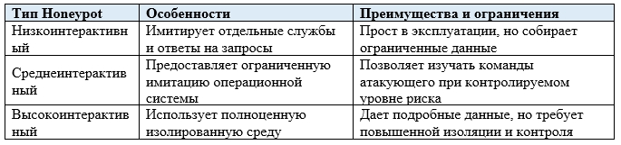
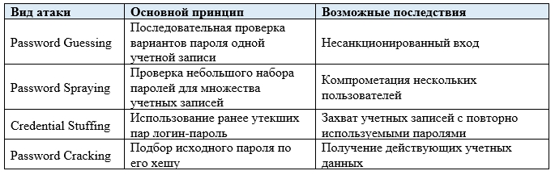
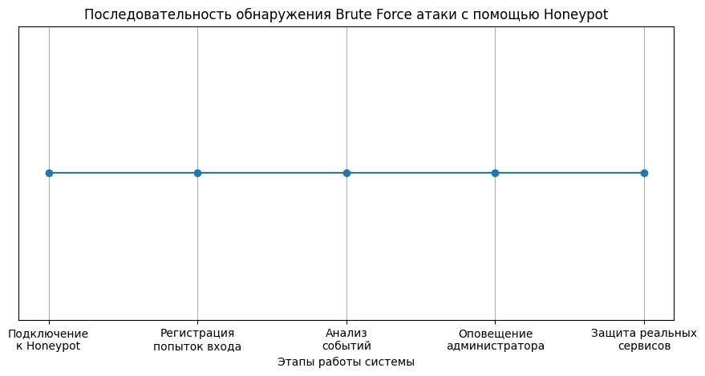
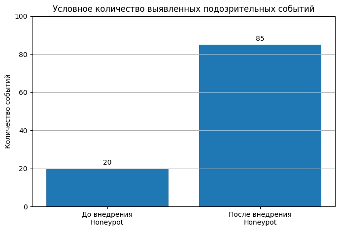

Глушенок Анна Александровна
Федеральное государственное автономное
образовательное учреждение высшего образования
Российский университет дружбы народов имени Патриса Лумумбы
Актуальность: - Рост числа сетевых сервисов, доступных из Интернета. - Увеличение автоматизированных попыток подбора учетных данных. - Необходимость своевременного обнаружения Brute Force атак.
Проблема: попытки подбора паролей могут оставаться незамеченными традиционными средствами контроля доступа.
Объект: процессы передачи, обработки и защиты информации в IP-сетях.
Предмет: Brute Force атаки на сетевые сервисы и применение Honeypot для их обнаружения и анализа.
Научная новизна: систематизация способов подбора учетных данных и обобщение подхода к применению Honeypot.
Практическая значимость: возможность использовать рекомендации при проектировании и администрировании корпоративных IP-сетей.
Цель: изучить Brute Force атаки, проанализировать принцип работы Honeypot и разработать подход к его применению.
Гипотеза: Honeypot повышает возможности обнаружения атак при использовании в составе комплекса мер защиты.
Задачи: - рассмотреть механизм и разновидности Brute Force атак; - изучить назначение и классификацию Honeypot; - проанализировать обнаружение атак с помощью ловушек; - сформировать комплексный подход и критерии его оценки.
Методы: анализ литературы, сравнение средств обнаружения, классификация угроз, системный подход и моделирование корпоративной IP-сети.
Основные понятия: - Brute Force — многократная проверка вариантов учетных данных. - Honeypot — специально созданный ресурс для привлечения злоумышленников и регистрации их действий. - Информационная безопасность — защищенность информации и инфраструктуры от угроз.

Причины: - короткие и распространенные пароли; - повторное использование учетных данных; - отсутствие MFA; - отсутствие ограничения числа попыток входа.
Последствия: - захват учетной записи; - утечка информации; - изменение настроек сервиса; - дальнейшее проникновение во внутреннюю сеть.

Преимущества: - выделение подозрительной активности; - сбор сведений о методах атакующего; - потенциально меньше ложных срабатываний.
Ограничения: - не гарантирует обнаружение всех атак; - не защищает реальные учетные записи самостоятельно; - требует изоляции и безопасного сопровождения.
1. Размещение: изолированный сегмент и контроль межсетевым экраном.
2. Регистрация: фиксация подключений, попыток входа и действий.
3. Анализ: централизованный сбор журналов и оповещение администратора.
4. Противодействие: MFA, надежные пароли, ограничение запросов и блокировка подозрительных подключений.

Организационные меры: - назначение ответственных сотрудников; - защищенное хранение журналов; - план реагирования на инциденты; - контроль сетевой изоляции.
Критерии оценки: - число обнаруженных попыток подбора; - время до формирования оповещения; - полнота журналирования; - корректность оповещений.

Вывод: Honeypot — дополнительный инструмент обнаружения и анализа атак. Его эффективность зависит от изоляции, настройки и интеграции с общей системой мониторинга.